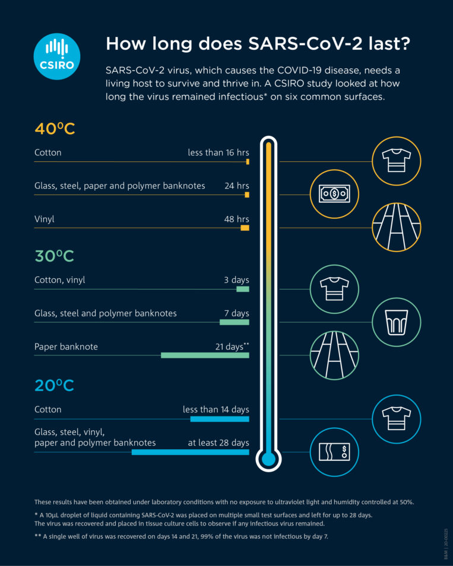

Concept
As a result of the COVID-19 pandemic, it is absolutely vital to sanitise and disinfect public surfaces. One of the most popular fomites is the poles people used to hold on to on public transport. PAUL is built to conveniently sanitise poles of public transport by moving vertically and disinfecting them with UV Light.
Why PAUL?
1. Automatic Moving and Disinfecting
After PAUL is activated through the app's command, it can move up and down automatically, and the UV emitter will be turned on to disinfect the pole.
2. Safety
Our primary competitor in the market would be UVD Robots, who themselves produce large robots which use UVC technology to clean entire rooms at a time.
However, our competitor is only able to deploy their robots when no humans are present due to
the damaging nature of UVC radiation.
In this case, PAUL encloses the UV emitter by a safety case.
3. Easy to Use
Users can control PAUL easily by a simple app. It connects PAUL via wifi with the help of a Raspberry Pi.
4. Cheaper
PAUL is much cheaper than other UV disinfecting robots in market. (Specific information can be implemented after market research)
Market Research
Background
During the ongoing pandemic, the risk of infection for taking public transportation is high due to the transmission nature of coronavirus.
One of the primary means of virus transmission is through high-touch surfaces on which viruses can last a long period of time.
Means to repetitively disinfect such surfaces during the operation of buses and trains is lacking in the market.
We therefore propose an automatic UV cleaning robot for poles – where passengers may often touch and get viruses inattentively –
as a supplement to the various general disinfection products that currently exist.
- Supplier Power Solutions - Purchasing in bulk to improve negotiating power
- Substitution Solutions - Focus on research which supports the use of UV cleaners as a support for paid professionals on high touch areas
- Conclusion - PAUL is well positioned to take advantage of the market provided we utilise available research in our pitches and offset supplier power.
- Using multiple suppliers to mitigate issues encountered with one
- The disinfection of high-touch areas is important as COVID-19 virus “can survive for 72 hours on metal and plastics” (PP-L Health Technology Solutions). 
- Current studies generally acknowledges the success of UV on reducing surface contamination. Particularly, SARS-CoV-2 (Covid-19) is highly susceptible to irradiation with ultraviolet light (Heilingloh et al., 2020).
- Although (Cresswell and Sheikh, 2020) raised concerns about the effects of existing UV cleaners on the market, these concerns raised were surrounding cleaning around concave surfaces and over distance – both of which are not relevant for PAUL.
- UVC of wavelength 100nm – 280nm is required for general viral deactivation. It is “a great, clean method of sterilization that involves no harsh chemicals” (UV Photons).
- According to the International UV association (IUVA), "dosage values for comparable viruses in the same SARS virus family are 10-20 mJ/cm^2 using direct UVC light at a wavelength of 254nm,” which achieves 99.9% disinfection under controlled lab conditions.
- Some papers have been published now suggesting the deactivation dosage specifically for Covid-19. They showed a range of varying dosages, and the travelling speed of PAUL would be inferred based on a dosage = 10.6 mJ/cm^2 (Hessling et el., 2020).
- UVC radiation with short wavelengths is “highly destructive to living tissues” (UV Photons).
- It is concerned that metallic poles can reflect UV light and may potentially make harm to people if the UV module is not properly sealed to eliminate human exposure during operation. According to this critical review, “PTFE, aluminum, and stainless-steel surfaces can reflect up to 95%, 90%, and 50% of UVC radiation, respectively.”
- A list of UV LED suppliers are found in the IUVA buyers guide.
- (Miller et al., 2015) concluded that UV cleaning solutions are best when working alongside professional cleaners.
- Using Glassdoor, scotrail.co.uk and abellio.com we researched who would be responsible for discussions surrounding implementing these robots on trains, the experience they would need and how they conducted their jobs.
Safety Concerns
Notes on Distribution & Implementation
Next Steps
- We are in a good position for horizontal scaling, having already prepared authentication scripts and a web UI which supports accounts with many robots.
- It is possible for expansion by considering implementing it during transit improving commercial viability but including many ethical and design constraints.
- It would be prudent for us to reach out to procurement officers and develop a good working relationship before our robot is entirely completed.
- We should also now begin to work on identifying alternative suppliers to minimise our dependency on individual suppliers and improve our prices through limiting their bargaining power.
Future Development
Remould after pandemic
After pandemic finish, PAUL can be remoulded for other use cases.
For example, it can be equipped with a camera and used to inspect street poles for damage.
This will allow workers to inspect poles from the safety of the group and only have to work high-up when damage is detected by the robot.
This will allow street poles to be inspected quicker and more frequently as workers can easily deploy the robot up the pole.